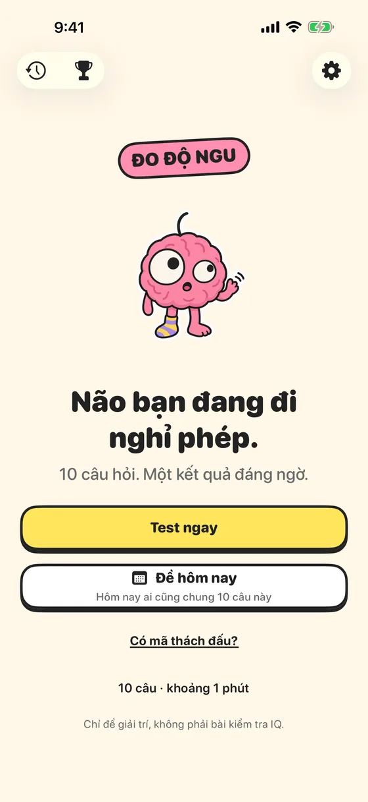
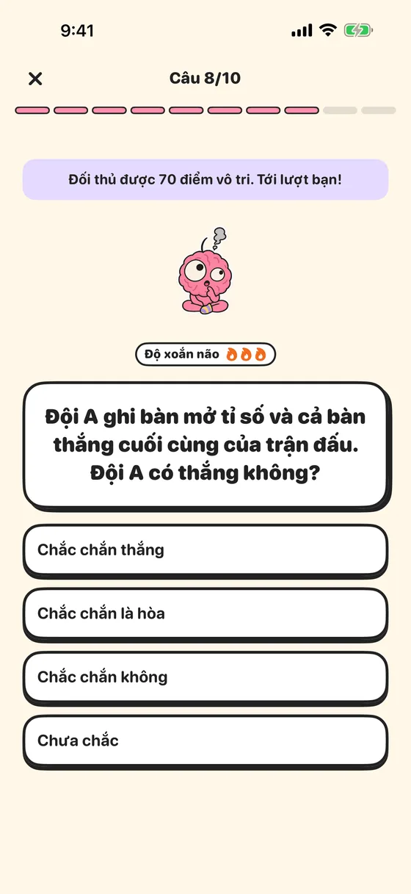
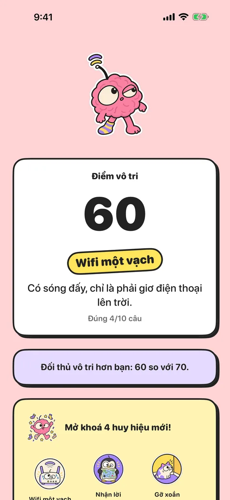
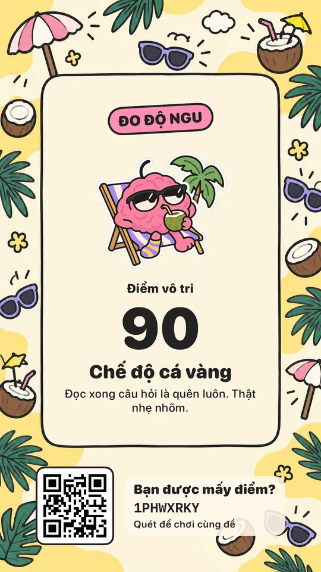
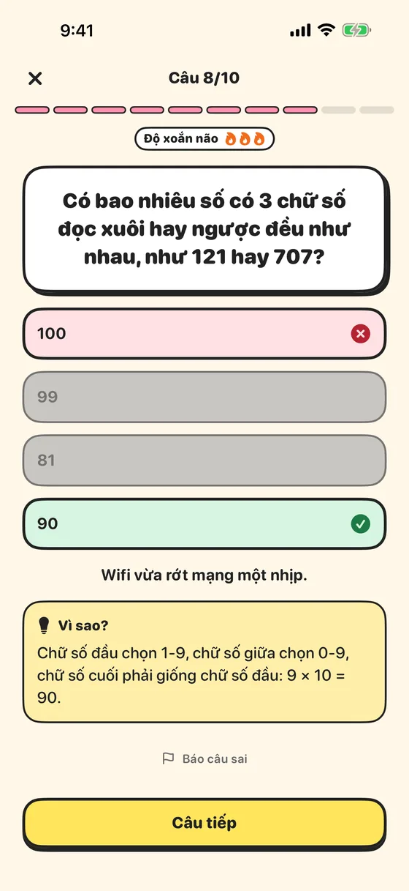
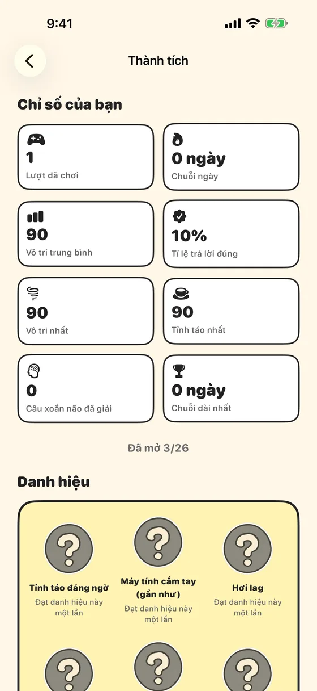
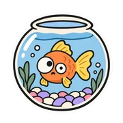
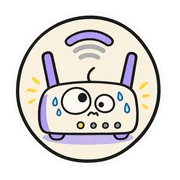

ĐO ĐỘ NGU Game đố vui cho iPhone & iPad
Não bạn đang đi nghỉ phép?
10 câu đố mẹo, câu lừa và câu xoắn não. Khoảng 1 phút. Một kết quả rất đáng ngờ, kèm danh hiệu để khoe với cả nhóm.
- Miễn phí
- Không quảng cáo
- Không cần mạng
- Tiếng Việt & English

Thử 5 câu ngay
Không cần cài app. Đọc kỹ từng chữ nhé: câu nào cũng có bẫy.
Xem thử vài câu bên dưới (bật JavaScript để chơi thật).
Đội A ghi bàn mở tỉ số và cả bàn thắng cuối cùng của trận đấu. Đội A có thắng không?
Đáp án
Chưa chắc. Chưa chắc. A dẫn 1–0, B ghi liền 3 bàn, rồi A ghi thêm 1: A có bàn đầu và bàn cuối nhưng vẫn thua 2–3.
Có 10 cây nến đang cháy. Bạn thổi tắt 3 cây. Còn mấy cây nến đang cháy?
Đáp án
7 cây. 7 cây. Câu đố nổi tiếng hỏi sáng hôm sau còn mấy cây; câu này hỏi ngay lúc này, nên 10 − 3 = 7 cây vẫn cháy.
Nói Lan không ăn cái nem cuối cùng là sai. Vậy ai đã ăn cái nem cuối cùng?
Đáp án
Lan. Lan. 'Nói Lan không ăn là sai' nghĩa là Lan có ăn.
Nếu một tuần tính từ thứ Hai đến Chủ nhật, ngày nào nằm chính giữa tuần?
Đáp án
Thứ Năm. Tuần có 7 ngày nên ngày giữa là ngày thứ 4: thứ Hai, Ba, Tư, rồi thứ Năm, rồi Sáu, Bảy, Chủ nhật.
Trên Mặt Trăng, một phi hành gia buông tay khỏi quả bóng bay bơm khí heli thật chắc. Quả bóng…
Đáp án
Rơi xuống đất. Rơi xuống. Bóng bay chỉ bay lên khi nhẹ hơn không khí xung quanh, mà Mặt Trăng làm gì có không khí.
Chơi thế nào?
Ba bước, một phút, vô số tranh cãi trong nhóm chat.
-

Trả lời 10 câu
Khởi động nhẹ nhàng rồi tăng dần độ khó. 4 câu cuối là xoắn não thật sự 🔥🔥🔥.
-

Nhận điểm vô tri
Sai càng nhiều càng vô tri. Kèm một danh hiệu, từ “Tỉnh táo đáng ngờ” tới “Vô tri tối thượng”.
-

Thách bạn bè
Ảnh 9:16 đăng story có mã QR. Bạn bè quét là chơi đúng 10 câu của bạn, không cần mạng.
Có gì trong app?
-
Hơn 5.000 câu
Đố mẹo, câu lừa, logic, tình huống vô tri và kiến thức “ủa thật hả?”.
-
Độ xoắn não
Mỗi lượt 2 câu dễ, 4 câu vừa, 4 câu khó. Có biểu tượng 🔥 báo trước.
-
Giải thích “Vì sao?”
Câu khó nào cũng có lời giải ngắn, đọc xong là “à ra thế”.
-
Đề hôm nay & chuỗi ngày
Cả thế giới chung 10 câu mỗi ngày. Giữ chuỗi 🔥, có nhắc nhở nếu muốn.
-
26 huy hiệu
Sưu tập danh hiệu, cột mốc và cả huy hiệu bí mật.
-
Widget màn hình chính
Xem nhanh chuỗi ngày và đề hôm nay, chạm là vào chơi.
-
Thách đấu offline
Mã 8 ký tự hoặc QR, dán cả tin nhắn vào là app tự tìm mã.
-
Riêng tư tuyệt đối
Không tài khoản, không theo dõi. Mọi thứ nằm trên máy bạn.
Sai cũng được, miễn là vui
Mascot não hồng phản ứng với từng câu trả lời. Câu khó có lời giải, chơi xong mở khoá huy hiệu mới.
- Mascot đổi nét mặt theo từng câu trả lời
- Câu khó nào cũng có lời giải “Vì sao?”
- Chơi xong mở khoá huy hiệu mới


Bạn sẽ là ai?
0–14
15–34
35–54
55–74
75–94
95–100
Sưu tập huy hiệu

Chế độ cá vàng- Khoai tây biết nói

Wifi một vạch- Não đi nghỉ phép
- Chăm như hamster
- Gỡ xoắn đầu tiên
- Cú đêm vô tri
- Thám tử đáng ngờ
Hỏi đáp
Đo Độ Ngu có mất phí không?
Miễn phí hoàn toàn. Không quảng cáo, không mua trong app.
Đây có phải bài kiểm tra IQ không?
Không. Điểm vô tri chỉ để giải trí, không đo trí thông minh hay giá trị của ai cả. Trò đùa nhắm vào tình huống, không nhắm vào bạn.
Có cần mạng để chơi không?
Không. Cả câu hỏi, đề hôm nay và thách đấu đều chạy offline. Mã thách đấu tự chứa đủ thông tin để dựng lại đúng đề.
Thách đấu bạn bè thế nào?
Chơi xong, gửi ảnh kết quả hoặc mã 8 ký tự. Bạn bè quét QR hoặc bấm “Có mã thách đấu?” rồi dán vào là chơi đúng 10 câu của bạn.
App có thu thập dữ liệu không?
Không. Không tài khoản, không theo dõi, không máy chủ. Lịch sử và thành tích chỉ nằm trên máy bạn.
Chơi được trên iPad không?
Được. App hỗ trợ cả iPhone và iPad, xoay ngang dọc thoải mái trên iPad.
Sẵn sàng cho não đi nghỉ phép?
Đo Độ Ngu sắp có mặt trên App Store. Trong lúc chờ, thử 5 câu xem bạn được mấy điểm vô tri.